Change analysis for Yemen for PRIMAP-hist v2.6.1_final compared to
v2.6_final
Overview over
emissions by sector and gas
The following figures show the aggregate national total emissions
excluding LULUCF AR6GWP100 for the country reported priority scenario.
The dotted linesshow the v2.6_final data.
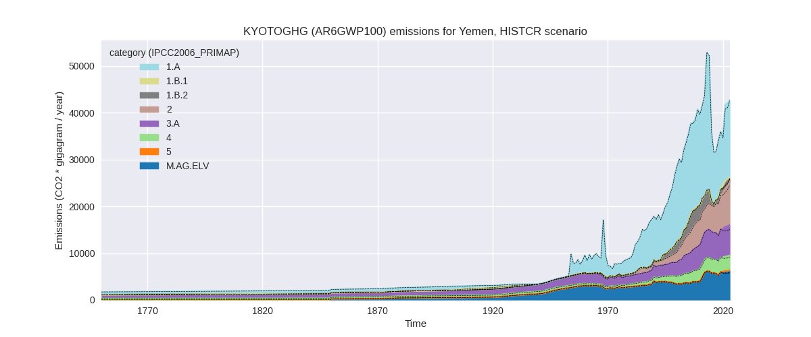
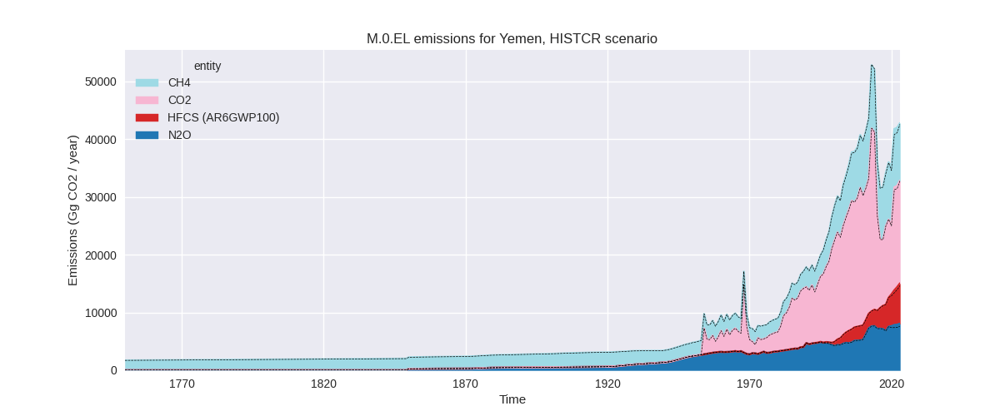
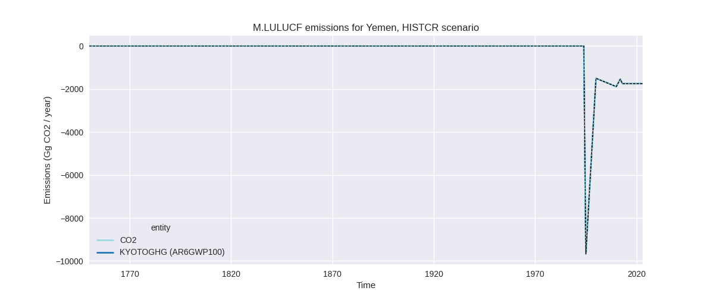
The following figures show the aggregate national total emissions
excluding LULUCF AR6GWP100 for the third party priority scenario. The
dotted linesshow the v2.6_final data.
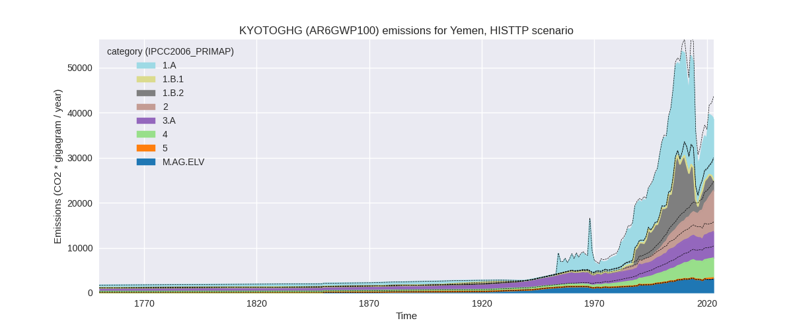
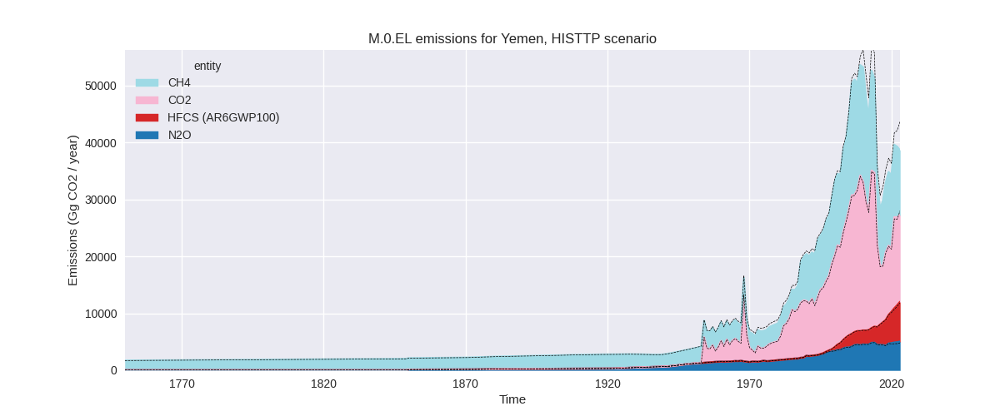
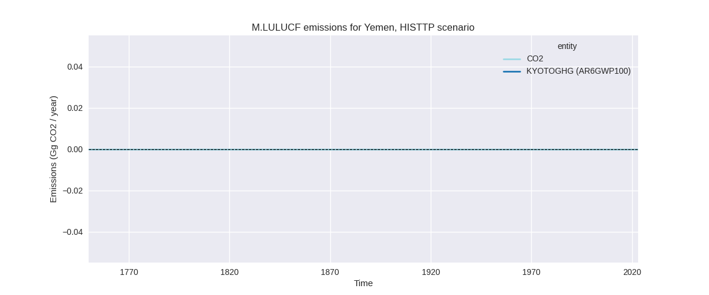
Overview over changes
In the country reported priority scenario we have the following
changes for aggregate Kyoto GHG and national total emissions excluding
LULUCF (M.0.EL):
- Emissions in 2023 have changed by 0.4%% (173.91 Gg CO2 / year)
- Emissions in 1990-2023 have changed by 0.3%% (95.00 Gg CO2 / year)
In the third party priority scenario we have the following changes
for aggregate Kyoto GHG and national total emissions excluding LULUCF
(M.0.EL):
- Emissions in 2023 have changed by -11.5%% (-5022.03 Gg CO2 / year)
- Emissions in 1990-2023 have changed by -4.6%% (-1744.69 Gg CO2 / year)
Most
important changes per scenario and time frame
In the country reported priority scenario the
following sector-gas combinations have the highest absolute impact on
national total KyotoGHG (AR6GWP100) emissions in 2023
(top 5):
- 1: 3.A, CH4 with 568.83 Gg CO2 / year (9.6%)
- 2: M.AG.ELV, N2O with 444.67 Gg CO2 / year (7.6%)
- 3: 1.B.2, CO2 with -368.12 Gg CO2 / year (-53.5%)
- 4: 1.B.2, CH4 with -339.06 Gg CO2 / year (-52.5%)
- 5: 4, CH4 with -126.13 Gg CO2 / year (-4.3%)
In the country reported priority scenario the
following sector-gas combinations have the highest absolute impact on
national total KyotoGHG (AR6GWP100) emissions in
1990-2023 (top 5):
- 1: 3.A, CH4 with 57.11 Gg CO2 / year (1.3%)
- 2: M.AG.ELV, N2O with 48.43 Gg CO2 / year (1.1%)
- 3: 1.B.2, CH4 with 34.87 Gg CO2 / year (4.1%)
- 4: 4, CH4 with -21.17 Gg CO2 / year (-1.1%)
- 5: 5, N2O with -18.20 Gg CO2 / year (-15.9%)
In the third party priority scenario the following
sector-gas combinations have the highest absolute impact on national
total KyotoGHG (AR6GWP100) emissions in 2023 (top
5):
- 1: 4, CH4 with -2910.68 Gg CO2 / year (-41.6%)
- 2: 1.B.2, CH4 with -1900.34 Gg CO2 / year (-61.7%)
- 3: 1.B.2, CO2 with -1049.36 Gg CO2 / year (-53.2%)
- 4: 3.A, CH4 with 513.20 Gg CO2 / year (9.6%)
- 5: M.AG.ELV, N2O with 230.01 Gg CO2 / year (7.6%)
In the third party priority scenario the following
sector-gas combinations have the highest absolute impact on national
total KyotoGHG (AR6GWP100) emissions in 1990-2023 (top
5):
- 1: 4, CH4 with -1938.26 Gg CO2 / year (-41.1%)
- 2: 2, CO2 with 108.34 Gg CO2 / year (16.3%)
- 3: 3.A, CH4 with 51.52 Gg CO2 / year (1.2%)
- 4: 1.B.2, CH4 with 35.25 Gg CO2 / year (0.6%)
- 5: M.AG.ELV, N2O with 25.06 Gg CO2 / year (1.0%)
Notes on data changes
Here we list notes explaining important emissions changes for the
country.
- No new country reported data has been included. Changes in the CR
time-series come from updated third party data (EDGAR, FAO) which is
used to extrapolate the country reported data. As sectoral changes
cancel total emissions changes are very small. The changes are mostly
limited to the latest years.
- In the TP scenario the changes are for similar sectors with the
addition of a high reduction of waste CH4 emissions from EDGAR
data.
Changes by sector and gas
For each scenario and time frame the changes are displayed for all
individual sectors and all individual gases. In the sector plot we use
aggregate Kyoto GHGs in AR6GWP100. In the gas plot we usenational total
emissions without LULUCF.
country reported scenario
2023
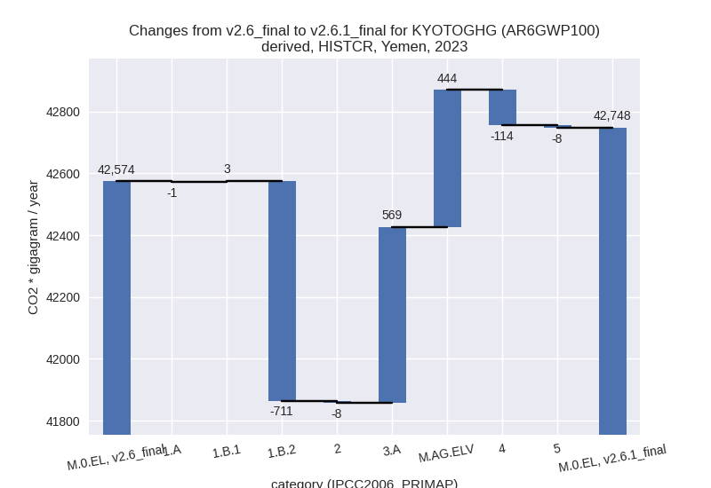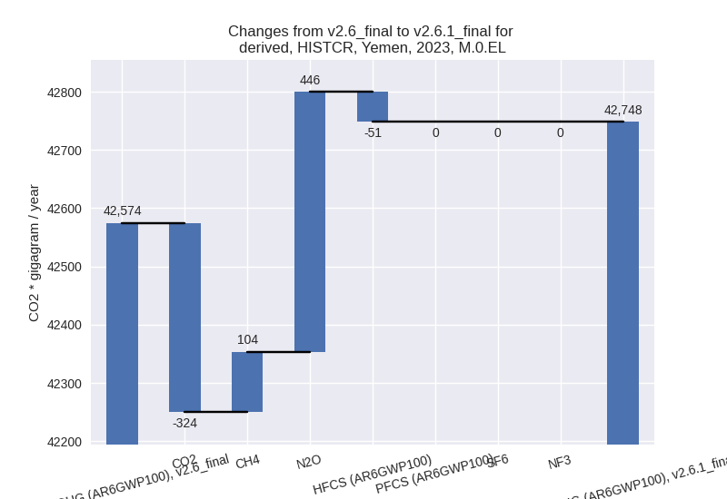
1990-2023
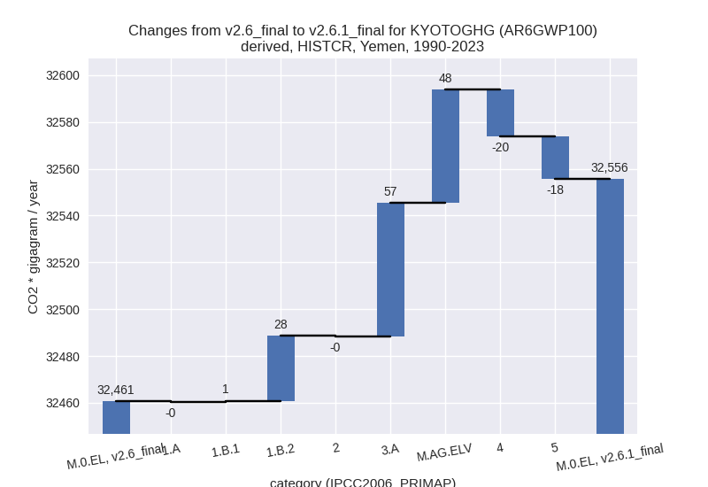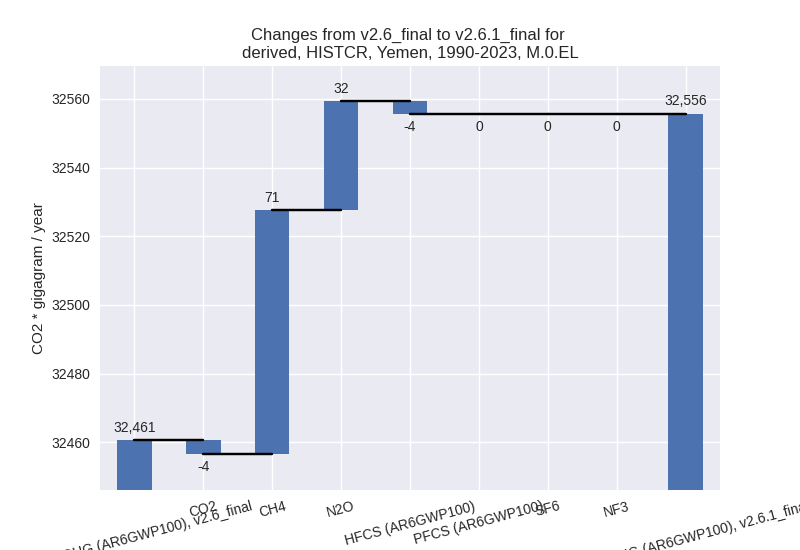
third party scenario
2023
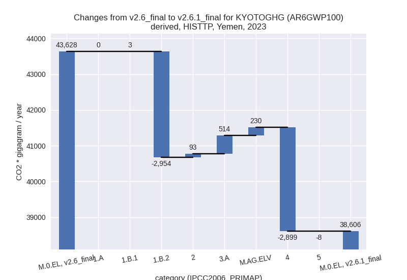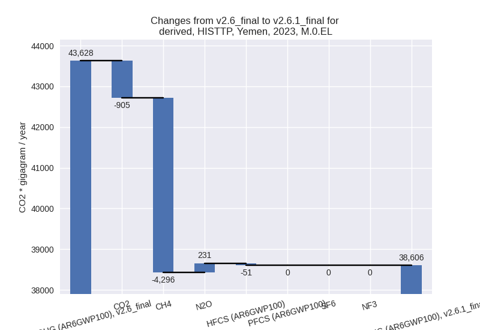
1990-2023
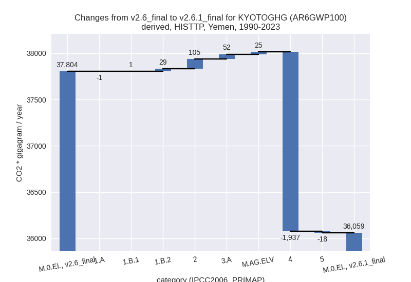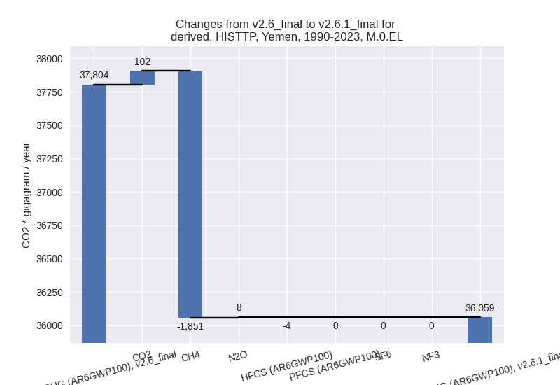
Detailed changes for the
scenarios:
country reported scenario
(HISTCR):
Most important changes
per time frame
For 2023 the following sector-gas combinations have
the highest absolute impact on national total KyotoGHG (AR6GWP100)
emissions in 2023 (top 5):
- 1: 3.A, CH4 with 568.83 Gg CO2 / year (9.6%)
- 2: M.AG.ELV, N2O with 444.67 Gg CO2 / year (7.6%)
- 3: 1.B.2, CO2 with -368.12 Gg CO2 / year (-53.5%)
- 4: 1.B.2, CH4 with -339.06 Gg CO2 / year (-52.5%)
- 5: 4, CH4 with -126.13 Gg CO2 / year (-4.3%)
For 1990-2023 the following sector-gas combinations
have the highest absolute impact on national total KyotoGHG (AR6GWP100)
emissions in 1990-2023 (top 5):
- 1: 3.A, CH4 with 57.11 Gg CO2 / year (1.3%)
- 2: M.AG.ELV, N2O with 48.43 Gg CO2 / year (1.1%)
- 3: 1.B.2, CH4 with 34.87 Gg CO2 / year (4.1%)
- 4: 4, CH4 with -21.17 Gg CO2 / year (-1.1%)
- 5: 5, N2O with -18.20 Gg CO2 / year (-15.9%)
Changes in the main sectors for aggregate KyotoGHG (AR6GWP100)
are
- 1: Total sectoral emissions in 2022 are 17441.03 Gg
CO2 / year which is 41.6% of M.0.EL emissions. 2023 Emissions have
changed by -3.9% (-709.69 Gg CO2 /
year). 1990-2023 Emissions have changed by 0.2% (27.92 Gg CO2 / year). For 2023 the
changes per gas
are:
The changes come from the following subsectors:
- 1.A: Total sectoral emissions in 2022 are 16090.27
Gg CO2 / year which is 92.3% of category 1 emissions. 2023 Emissions
have changed by -0.0% (-1.10 Gg CO2
/ year). 1990-2023 Emissions have changed by -0.0% (-0.40 Gg CO2 / year).
- 1.B.1: Total sectoral emissions in 2022 are 201.07
Gg CO2 / year which is 1.2% of category 1 emissions. 2023 Emissions have
changed by 1.3% (2.52 Gg CO2 /
year). 1990-2023 Emissions have changed by 0.4% (0.59 Gg CO2 / year).
- 1.B.2: Total sectoral emissions in 2022 are 1149.69
Gg CO2 / year which is 6.6% of category 1 emissions. 2023 Emissions have
changed by -53.0% (-711.10 Gg CO2 /
year). 1990-2023 Emissions have changed by 1.7% (27.73 Gg CO2 / year). For 2023 the
changes per gas
are:
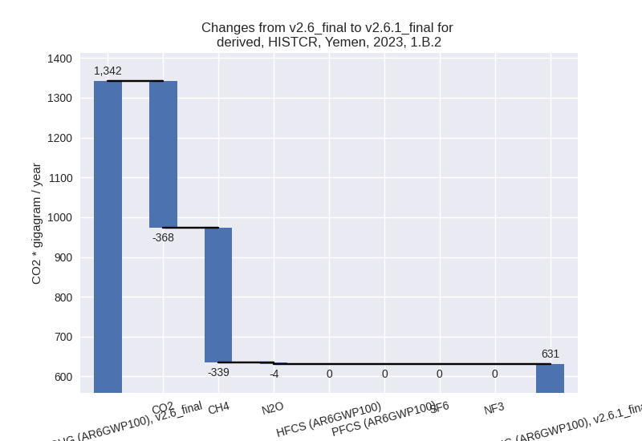
There is no subsector information available in PRIMAP-hist.
- 2: Total sectoral emissions in 2022 are 8816.83 Gg
CO2 / year which is 21.0% of M.0.EL emissions. 2023 Emissions have
changed by -0.1% (-7.74 Gg CO2 /
year). 1990-2023 Emissions have changed by -0.0% (-0.34 Gg CO2 / year).
- M.AG: Total sectoral emissions in 2022 are 12541.32
Gg CO2 / year which is 29.9% of M.0.EL emissions. 2023 Emissions have
changed by 8.6% (1013.01 Gg CO2 /
year). 1990-2023 Emissions have changed by 1.2% (105.59 Gg CO2 / year). For 2023 the
changes per gas
are:
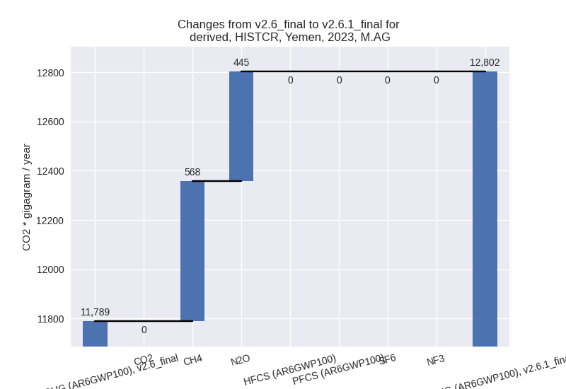
The changes come from the following subsectors:
- 3.A: Total sectoral emissions in 2022 are 6374.85
Gg CO2 / year which is 50.8% of category M.AG emissions. 2023 Emissions
have changed by 9.6% (569.41 Gg CO2
/ year). 1990-2023 Emissions have changed by 1.3% (57.23 Gg CO2 / year). For 2023 the
changes per gas
are:
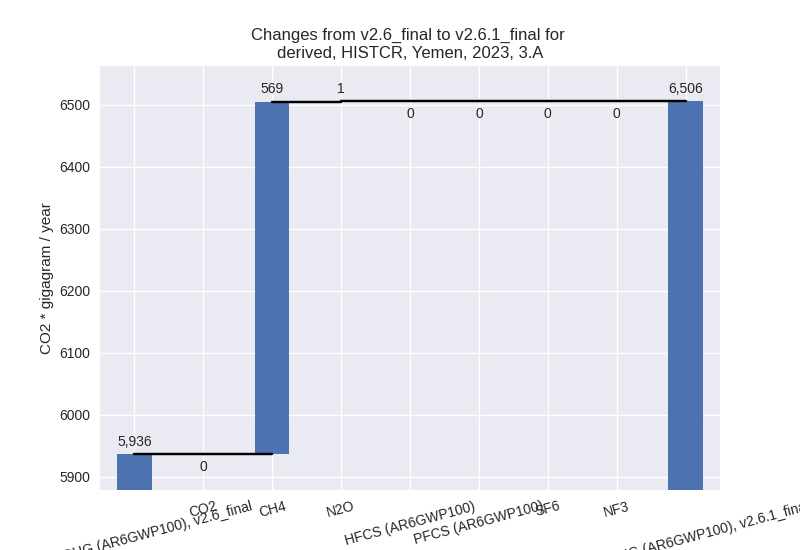
There is no subsector information available in PRIMAP-hist.
- M.AG.ELV: Total sectoral emissions in 2022 are
6166.47 Gg CO2 / year which is 49.2% of category M.AG emissions. 2023
Emissions have changed by 7.6%
(443.60 Gg CO2 / year). 1990-2023 Emissions have changed by 1.1% (48.35 Gg CO2 / year). For 2023 the
changes per gas
are:
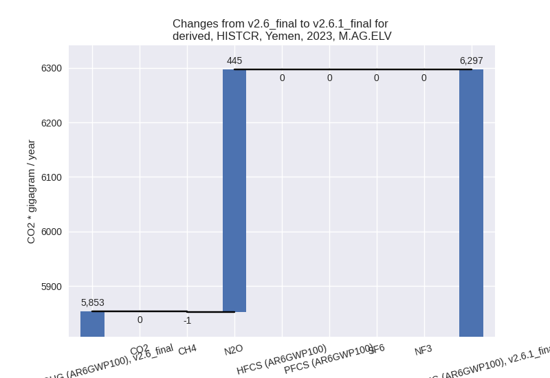
There is no subsector information available in PRIMAP-hist.
- 4: Total sectoral emissions in 2022 are 3110.02 Gg
CO2 / year which is 7.4% of M.0.EL emissions. 2023 Emissions have
changed by -3.5% (-113.56 Gg CO2 /
year). 1990-2023 Emissions have changed by -0.9% (-19.97 Gg CO2 / year). For 2023 the
changes per gas
are:
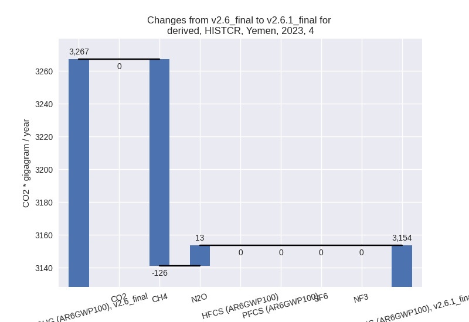
- 5: Total sectoral emissions in 2022 are 55.76 Gg
CO2 / year which is 0.1% of M.0.EL emissions. 2023 Emissions have
changed by -12.3% (-8.11 Gg CO2 /
year). 1990-2023 Emissions have changed by -15.9% (-18.20 Gg CO2 / year). For 2023
the changes per gas
are:
For 1990-2023 the changes per gas
are:
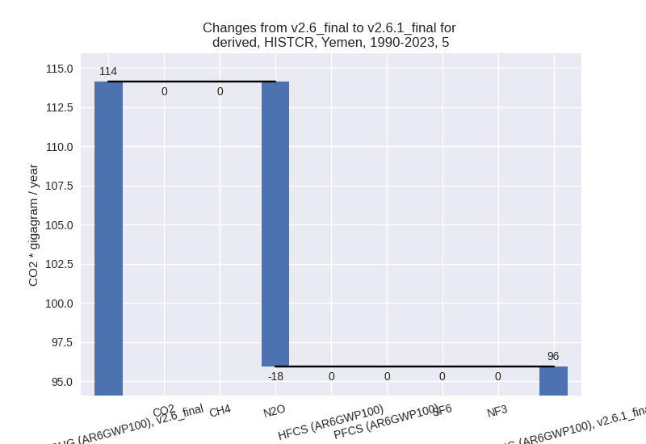
third party scenario (HISTTP):
Most important changes
per time frame
For 2023 the following sector-gas combinations have
the highest absolute impact on national total KyotoGHG (AR6GWP100)
emissions in 2023 (top 5):
- 1: 4, CH4 with -2910.68 Gg CO2 / year (-41.6%)
- 2: 1.B.2, CH4 with -1900.34 Gg CO2 / year (-61.7%)
- 3: 1.B.2, CO2 with -1049.36 Gg CO2 / year (-53.2%)
- 4: 3.A, CH4 with 513.20 Gg CO2 / year (9.6%)
- 5: M.AG.ELV, N2O with 230.01 Gg CO2 / year (7.6%)
For 1990-2023 the following sector-gas combinations
have the highest absolute impact on national total KyotoGHG (AR6GWP100)
emissions in 1990-2023 (top 5):
- 1: 4, CH4 with -1938.26 Gg CO2 / year (-41.1%)
- 2: 2, CO2 with 108.34 Gg CO2 / year (16.3%)
- 3: 3.A, CH4 with 51.52 Gg CO2 / year (1.2%)
- 4: 1.B.2, CH4 with 35.25 Gg CO2 / year (0.6%)
- 5: M.AG.ELV, N2O with 25.06 Gg CO2 / year (1.0%)
Changes in the main sectors for aggregate KyotoGHG (AR6GWP100)
are
- 1: Total sectoral emissions in 2022 are 17280.79 Gg
CO2 / year which is 44.0% of M.0.EL emissions. 2023 Emissions have
changed by -15.7% (-2950.96 Gg CO2 /
year). 1990-2023 Emissions have changed by 0.1% (29.28 Gg CO2 / year). For 2023 the
changes per gas
are:
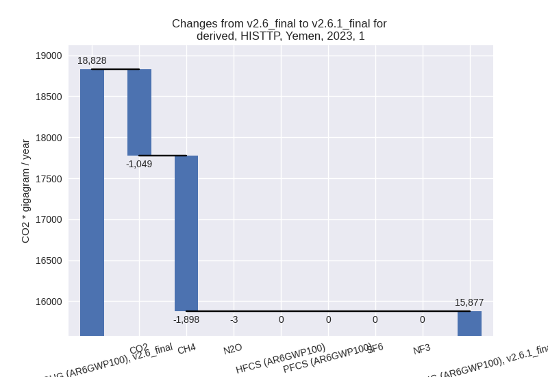
The changes come from the following subsectors:
- 1.A: Total sectoral emissions in 2022 are 13175.25
Gg CO2 / year which is 76.2% of category 1 emissions. 2023 Emissions
have changed by 0.0% (0.14 Gg CO2 /
year). 1990-2023 Emissions have changed by -0.0% (-0.53 Gg CO2 / year).
- 1.B.1: Total sectoral emissions in 2022 are 201.07
Gg CO2 / year which is 1.2% of category 1 emissions. 2023 Emissions have
changed by 1.3% (2.52 Gg CO2 /
year). 1990-2023 Emissions have changed by 0.4% (0.59 Gg CO2 / year).
- 1.B.2: Total sectoral emissions in 2022 are 3904.47
Gg CO2 / year which is 22.6% of category 1 emissions. 2023 Emissions
have changed by -58.3% (-2953.62 Gg
CO2 / year). 1990-2023 Emissions have changed by 0.4% (29.23 Gg CO2 / year). For 2023 the
changes per gas
are:
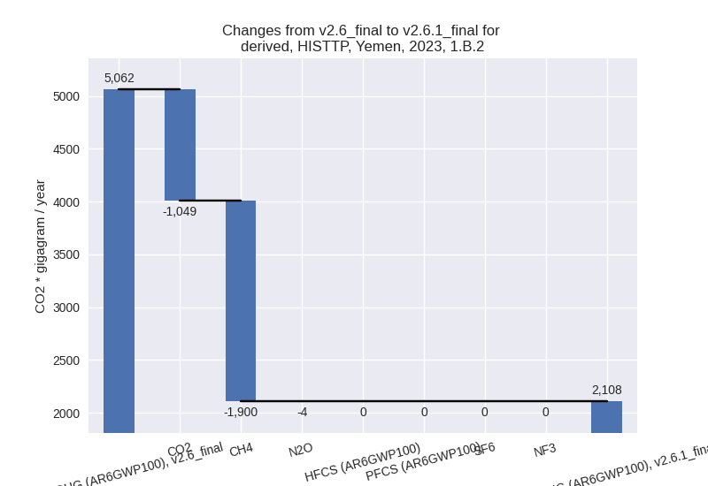
There is no subsector information available in PRIMAP-hist.
- 2: Total sectoral emissions in 2022 are 8630.03 Gg
CO2 / year which is 22.0% of M.0.EL emissions. 2023 Emissions have
changed by 1.0% (92.51 Gg CO2 /
year). 1990-2023 Emissions have changed by 2.7% (104.68 Gg CO2 / year). For 1990-2023
the changes per gas
are:
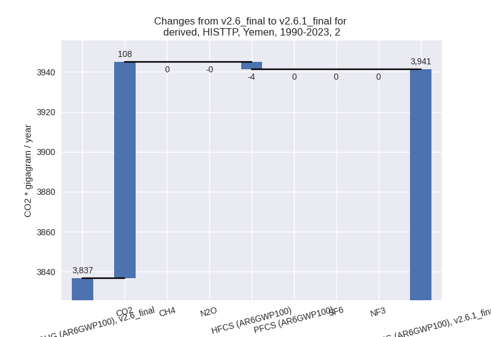
- M.AG: Total sectoral emissions in 2022 are 8935.14
Gg CO2 / year which is 22.8% of M.0.EL emissions. 2023 Emissions have
changed by 8.9% (743.29 Gg CO2 /
year). 1990-2023 Emissions have changed by 1.1% (76.66 Gg CO2 / year). For 2023 the
changes per gas
are:
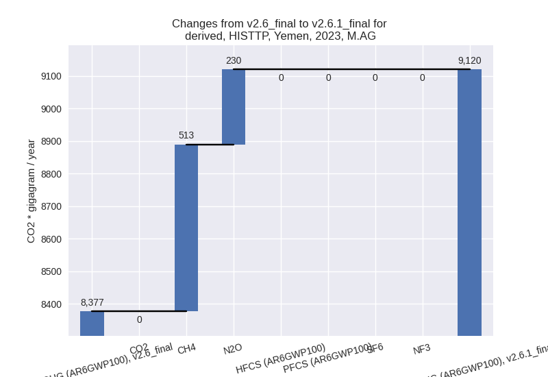
The changes come from the following subsectors:
- 3.A: Total sectoral emissions in 2022 are 5747.45
Gg CO2 / year which is 64.3% of category M.AG emissions. 2023 Emissions
have changed by 9.6% (513.66 Gg CO2
/ year). 1990-2023 Emissions have changed by 1.2% (51.62 Gg CO2 / year). For 2023 the
changes per gas
are:
There is no subsector information available in PRIMAP-hist.
- M.AG.ELV: Total sectoral emissions in 2022 are
3187.68 Gg CO2 / year which is 35.7% of category M.AG emissions. 2023
Emissions have changed by 7.6%
(229.63 Gg CO2 / year). 1990-2023 Emissions have changed by 1.0% (25.04 Gg CO2 / year). For 2023 the
changes per gas
are:
There is no subsector information available in PRIMAP-hist.
- 4: Total sectoral emissions in 2022 are 4345.70 Gg
CO2 / year which is 11.1% of M.0.EL emissions. 2023 Emissions have
changed by -39.7% (-2898.75 Gg CO2 /
year). 1990-2023 Emissions have changed by -39.3% (-1937.12 Gg CO2 / year). For 2023
the changes per gas
are:
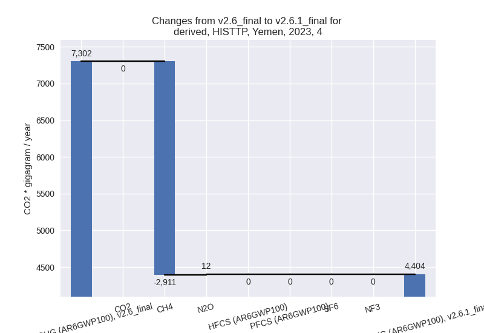
For 1990-2023 the changes per gas
are:
- 5: Total sectoral emissions in 2022 are 55.76 Gg
CO2 / year which is 0.1% of M.0.EL emissions. 2023 Emissions have
changed by -12.3% (-8.11 Gg CO2 /
year). 1990-2023 Emissions have changed by -15.9% (-18.20 Gg CO2 / year). For 2023
the changes per gas
are:
For 1990-2023 the changes per gas
are: